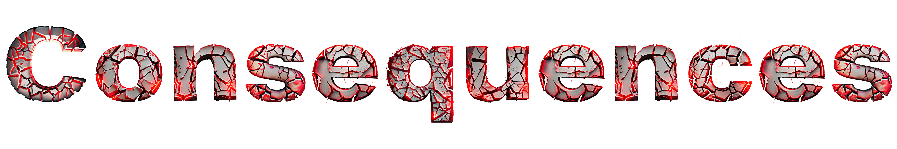
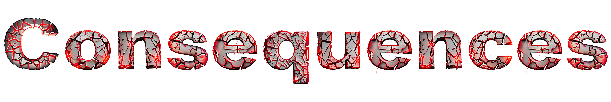

Chapter 1.5 Ending L (Foolish Bravery)
You rush towards him and attempt to neutralise the threat. Although you are good, he is better. He dodges all your attacks and counters them.
You valiantly swing at him, however it is too late. You look below to see a large wound. He had quickly attacked you. Had you listened to your Sensei
the outcome would not have ended in your defeat..
CHOOSE YOUR DESTINY!
 
